PHM Society 2016 Data Challenge의 실제 CMP 장비 센서 로그(약 97만 행)로 웨이퍼별 평균 연마율(MRR)을 예측하는 가상 계측(Virtual Metrology) 모델을 만들고, 공정제어에서 쓰는 EWMA Run-to-Run 보정을 붙여 “측정하지 않은 웨이퍼의 MRR을 얼마나 믿을 수 있는가”를 정량 평가한 머신러닝 프로젝트입니다. 데이터에서 찾은 현상 하나하나를 CMP 이론(Preston 식, 패드 글레이징, 컨디셔닝, 다중 존 캐리어 헤드)으로 해석하는 데 중점을 두었습니다. (숭실대학교 머신러닝 개인 프로젝트, 2026-2학기)
01프로젝트 요약
질문. CMP 장비가 연마 중에 남기는 압력·회전·슬러리·소모품 사용량 로그만으로 웨이퍼의 MRR을 예측할 수 있는가? 그리고 그 모델은 학습하지 않은 미래 기간에도 쓸 수 있는가?
접근. 1초 단위 시계열을 “웨이퍼 × 연마 단계” 한 줄로 요약하되 플래튼이 실제로 도는 구간만 사용했고, 공정 그룹(A_1 / A_4 / B_4)을 나눠 다뤘습니다. 같은 모델을 “같은 기간”과 “미래 기간” 두 방식으로 평가해, 같은 기간에서만 성능을 올리는 시간 대리 변수(소모품 사용량 카운터)를 걸러냈습니다. 최종 모델은 봉인해 둔 test 세트로 단 한 번 평가했고, 마지막으로 미래 20일에 대해 실측을 5장 중 1장만 받는 EWMA 편향 보정을 시뮬레이션했습니다.
| 비교 조건 | RMSE | 해석 |
|---|---|---|
| 기준선: 공정 그룹별 학습 평균 (test) | 7.18 | 센서를 전혀 쓰지 않는 예측 |
| 최종 랜덤 포레스트 (test, 1회 평가) | 5.45 | 기준선 대비 24% 감소. 부트스트랩 95% CI 5.05 ~ 5.90 (기준선이 구간 밖) |
| 참고: Li·Wu·Yu (2019) 같은 test 세트 | 7.01 | 전처리·피처·모델 구성이 달라 우열 비교가 아닌 참고값 |
| 미래 20일, 보정 없음 | 6.15 | MRR이 장기적으로 오르는 추세를 모델이 따라가지 못함 |
| 미래 20일, EWMA 보정 (λ = 0.3, 5장 중 1장 실측) | 5.32 | 측정 80% 감축 상태에서 14% 감소 |
MRR은 대회 측이 단위를 공개하지 않은 상대값입니다(현장에서는 보통 Å/min). 이하 RMSE도 같은 단위입니다.
- Preston 식의 P·V 항은 예측에 기여하지 않았습니다. 회전 속도는 레시피로 고정(±3%)되어 있고, MRR을 움직인 것은 기울기 kp에 해당하는 소모품 상태였습니다. 드레서 사용량 하나를 빼면 같은 기간 오차가 31% 커졌습니다.
- 드레서 교체 주기(약 20일)마다 MRR이 톱니 모양으로 떨어졌다가 회복했습니다. 패드 글레이징으로 kp가 줄고 컨디셔너 교체로 되살아나는 모습이 생산 데이터에 그대로 남아 있었습니다.
- 같은 모델이 평가 방식에 따라 RMSE 3.88 ~ 8.44로 달라졌습니다. 사용량 카운터는 같은 기간에서는 성능을 올렸지만 미래 기간에서는 그룹 평균보다도 나빠, 최종 모델에서 제외했습니다.
- 특성 중요도 1위는 리테이너 링 압력, 2위는 센터 존 압력이었고 회전 계열은 하위였습니다. SK하이닉스·삼성전자 CMP 연구가 리테이너 링과 존 압력을 핵심 제어 변수로 다루는 것과 같은 방향입니다.
02배경과 문제 정의
CMP(Chemical Mechanical Planarization)는 웨이퍼 표면을 화학 반응과 기계적 마찰로 갈아내 평탄하게 만드는 공정으로, 소자 분리(STI)부터 배선(Cu)까지 한 웨이퍼가 여러 차례 거칩니다. 연마량이 모자라면 다음 층에서 단락·패턴 불량이 생기고, 넘치면 아래 막이나 배선이 손상됩니다. 그래서 공정 엔지니어가 가장 먼저 보는 지표가 연마율(MRR, 현장 용어 RR·Removal Rate)입니다.
문제는 MRR을 알려면 연마 전후의 막 두께를 측정 장비로 재야 한다는 점입니다. 측정에는 시간과 장비 용량이 들기 때문에 실제 라인에서는 로트당 일부 웨이퍼만 샘플링합니다. 측정하지 않은 웨이퍼는 장비 상태가 변해도 알 수 없습니다. 반면 CMP 장비는 모든 웨이퍼에 대해 압력·회전·슬러리 유량·소모품 사용량을 초 단위로 기록합니다.
본 프로젝트의 목표는 세 가지입니다.
- 센서 로그로 MRR을 예측하는 모델을 만들고, 센서를 쓰지 않는 기준선보다 얼마나 나은지 정량화한다.
- 데이터에서 보이는 현상을 CMP 물리(Preston 식, 소모품 마모)로 설명하고, 그 해석으로 피처를 고른다.
- 현업처럼 “과거로 학습해 미래를 예측”하는 상황에서 모델이 버티는지 확인하고, 버티지 못하는 부분은 공정제어 방식(EWMA)으로 보완한다.
03이론적 배경: CMP
3.1 CMP가 필요한 이유: 평탄화와 리소그래피 초점 심도
배선이나 게이트 같은 패턴 위에 절연막을 증착하면 막은 아래 패턴 모양을 따라 울퉁불퉁하게 쌓입니다. 이 단차가 남은 채로 다음 층을 노광하면 노광기의 초점 심도(Depth of Focus, DOF) 안에 웨이퍼 표면 전체를 넣을 수 없습니다. 미세화가 진행될수록 해상도를 높이기 위해 개구수(NA)를 키우고, DOF는 NA의 제곱에 반비례해 줄어들기 때문에 허용 단차도 함께 작아집니다. CMP는 웨이퍼 전체를 전역 평탄화(global planarization)할 수 있는 거의 유일한 방법이어서, 다층 배선이 도입된 이후 전공정·후공정 모두의 필수 단계가 되었습니다.
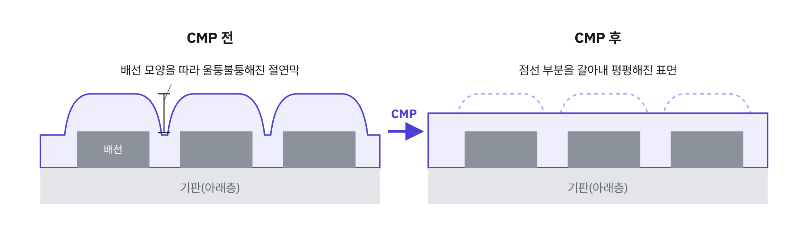
3.2 전공정에서 CMP가 쓰이는 곳
CMP는 연마 대상 막과 “어디서 멈출 것인가”에 따라 슬러리·종료 방식·관리 지표가 달라집니다. 특히 정지층이 없는 산화막 연마는 시간으로 끝내기 때문에 제거량 = MRR × 연마 시간이 되고, MRR 예측 오차가 곧 두께 오차가 됩니다. 이 프로젝트가 MRR을 예측하는 이유가 여기에 있습니다.
| 적용 단계 | 연마 대상 / 멈추는 곳 | 핵심 관리 포인트 |
|---|---|---|
| STI CMP (소자 분리) | 트렌치를 채운 산화막 / 질화막(SiN) 정지층 | 산화막:질화막 선택비(세리아 슬러리), 넓은 트렌치의 디싱, 질화막 잔막 두께 |
| ILD · PMD CMP (층간 절연막) | 증착된 산화막 / 정지층 없음, 시간 기준 종료 | MRR과 연마 시간으로 남는 두께가 결정됨 → MRR 변동 관리가 곧 두께 관리 |
| Poly open · 메탈 게이트 CMP (HKMG gate-last) | 더미 폴리 위 절연막, 이후 게이트 금속 / 게이트 상단 | 게이트 높이 균일도. High-k/메탈 게이트 집적의 핵심 단계 (관련: High-k SCE 프로젝트) |
| W CMP (콘택트 · 비아 플러그) | 텅스텐 과증착층 / 산화막 | 산화제가 만든 표면 산화층을 연마 입자가 제거, 플러그 리세스·산화막 침식 |
| Cu CMP (다마신 배선, 후공정) | 구리 → 배리어(Ta/TaN) 다단계 / 절연막 | 디싱(넓은 배선이 움푹 패임)·이로전(밀집 패턴 영역이 얇아짐)·부식·스크래치 |
PHM 2016 데이터는 연마 대상 막을 공개하지 않았습니다. 따라서 본 프로젝트의 해석은 특정 막이 아닌 “CMP 일반”의 물리에 기반합니다.
3.3 장비 구성과 데이터 컬럼의 대응
회전형 CMP 장비는 회전하는 플래튼(정반) 위에 연마 패드를 붙이고, 캐리어 헤드가 웨이퍼를 뒤집어 잡아 패드에 눌러 대는 구조입니다. 슬러리는 패드 위로 공급되고, 컨디셔너(드레서)가 패드 표면을 계속 긁어 거칠기를 회복시킵니다. 데이터의 25개 컬럼은 이 부품들의 상태를 그대로 기록하고 있습니다.
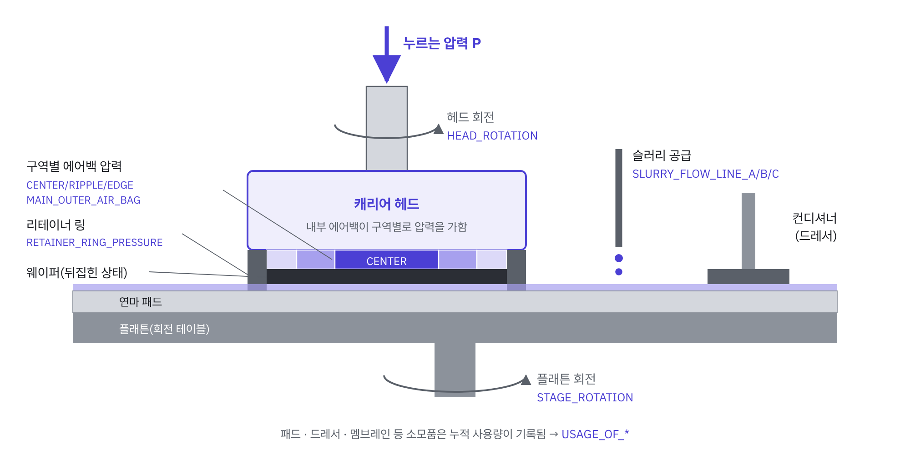
| 부품 | 역할 | 관련 컬럼 |
|---|---|---|
| 캐리어 헤드 · 에어백(존) | 웨이퍼 뒷면을 여러 동심원 존으로 나눠 각각 다른 압력으로 누름 → 반경 방향 제거 프로파일 조절 | *_AIR_BAG_PRESSURE (CENTER · RIPPLE · MAIN_OUTER · EDGE), PRESSURIZED_CHAMBER_PRESSURE |
| 리테이너 링 | 회전 중 웨이퍼가 빠져나가지 않게 가두고, 웨이퍼 바깥 패드를 미리 눌러 가장자리 패드 변형(edge rebound)을 줄임 | RETAINER_RING_PRESSURE |
| 멤브레인 · 백킹 필름 | 존 압력을 웨이퍼에 전달하는 고무막과 받침막. 소모품 | USAGE_OF_MEMBRANE, USAGE_OF_BACKING_FILM, USAGE_OF_PRESSURIZED_SHEET |
| 플래튼 · 패드 | 회전하며 웨이퍼와 상대 운동을 만듦. 패드는 다공성 폴리우레탄으로 슬러리를 머금고 미세 돌기로 입자를 웨이퍼에 누름 | STAGE_ROTATION, USAGE_OF_POLISHING_TABLE |
| 헤드 · 웨이퍼 회전 | 패드 회전과 함께 웨이퍼 각 지점의 상대 속도를 고르게 만듦 | HEAD_ROTATION, WAFER_ROTATION |
| 슬러리 공급 | 연마 입자(실리카·세리아 등)와 화학 첨가제(pH 조절제, 산화제 등)를 공급 | SLURRY_FLOW_LINE_A/B/C |
| 컨디셔너(드레서) | 다이아몬드 디스크로 패드 표면을 긁어 막힌 기공과 눌린 돌기를 되살림. 소모품 | USAGE_OF_DRESSER, USAGE_OF_DRESSER_TABLE |
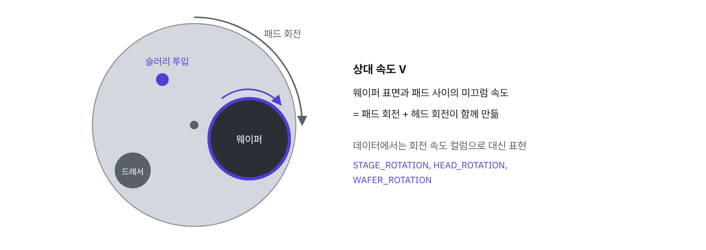
3.4 다중 존 캐리어 헤드와 균일도
웨이퍼 전체를 같은 압력으로 누르면 가장자리에서 패드가 휘어 올라오는 효과 때문에 반경 방향으로 제거량이 달라집니다. 최신 캐리어 헤드는 에어백(멤브레인)을 동심원 존으로 나눠 존마다 압력을 따로 제어하고, 리테이너 링 압력으로 가장자리 패드 변형을 보정해 웨이퍼 내 불균일도(WIWNU)를 낮춥니다.
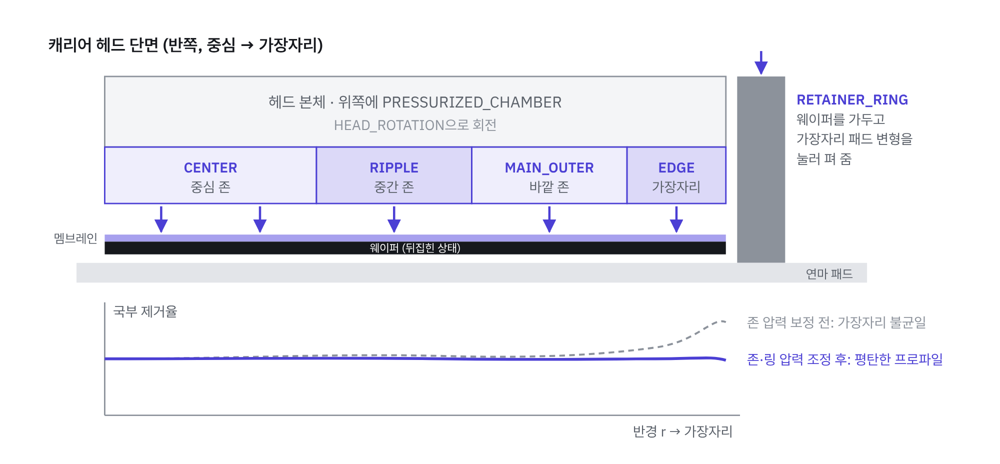
현업 연구도 이 변수들을 중심으로 진행됩니다. 삼성전자 Foundry CMP Technology Team은 5존 캐리어 헤드의 존 압력으로 반경 방향 MRR 프로파일을 예측하는 DNN을 발표했고(Cho et al., 2025), SK하이닉스는 리테이너 링 구조를 바꿔 MRR과 WIWNU를 개선한 연구를 성균관대와 함께 발표했습니다(2019). 본 프로젝트의 특성 중요도 1·2위가 리테이너 링과 센터 존 압력이었다는 결과(6.7)는 이 흐름과 일치합니다.
3.5 재료 제거 메커니즘: 화학 + 기계
CMP의 핵심은 화학 작용과 기계 작용의 시너지입니다. 화학만으로는 제거 속도가 매우 느리고, 기계만으로는 스크래치와 손상이 큽니다.
- 화학 작용. 슬러리의 화학 성분이 웨이퍼 표면을 원래 막보다 무른 층으로 바꿉니다. 산화막(SiO2)은 물과 반응해 표면에 수화층(Si–OH)이 생기고(Cook, 1990), 텅스텐·구리는 산화제가 표면에 얇은 금속 산화층을 만듭니다.
- 기계 작용. 패드 표면의 미세 돌기(asperity)가 연마 입자를 웨이퍼에 눌러, 입자가 무른 표면층을 긁어냅니다. 드러난 새 표면은 다시 화학 반응을 받고, 이 과정이 반복됩니다.
- 돌출부가 먼저 깎이는 이유. 단차가 있으면 튀어나온 부분이 패드와 더 큰 압력으로 접촉하므로 먼저 제거되고, 그래서 표면이 평탄해집니다. 다만 패드는 탄성체라 넓은 저지대까지 눌러 들어가기 때문에, 패턴 밀도·크기에 따라 디싱·이로전 같은 패턴 의존 불균일이 생깁니다.
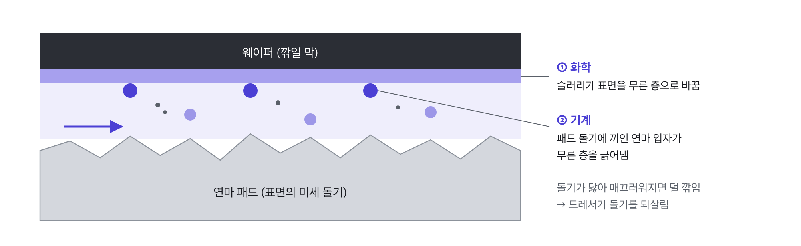
3.6 MRR의 정의와 Preston 식
MRR은 연마 전후 두께 차이를 연마 시간으로 나눈 값입니다. 데이터의 AVG_REMOVAL_RATE는 웨이퍼 여러 지점에서 측정한 값의 평균으로 보입니다.
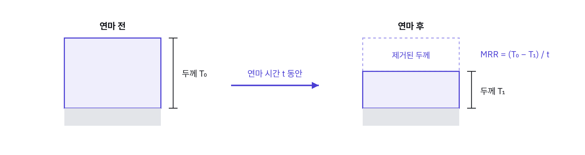
MRR을 공정 조건과 연결하는 가장 기본적인 모델은 유리 연마에서 경험적으로 얻은 Preston 식(1927)입니다.
- P와 V는 레시피가 정하는 변수입니다. P는 캐리어 헤드 존 압력, V는 플래튼·헤드 회전 속도로 결정됩니다. 둘 중 하나가 0이면 MRR도 0입니다. 이 성질이 본 프로젝트에서 “실제 연마 구간”을 정의하는 근거가 되었습니다(04 설계).
- kp는 나머지 모든 것을 담는 계수입니다. 슬러리 화학, 입자 크기·농도, 패드 경도와 표면 상태, 온도가 여기에 들어갑니다. 같은 레시피(P·V 고정)로 돌려도 MRR이 변한다면, 변한 것은 kp입니다.
- 한계. Preston 식은 1차 근사입니다. 실제로는 압력에 대한 비선형성, 슬러리 막 두께에 따른 접촉 상태 변화 등이 있어 입자 접촉 역학 기반 모델(Luo & Dornfeld, 2001)들이 제안되었습니다. 현업에서 Preston 식은 매번 계산하는 식이라기보다 “MRR은 압력·속도·소모품 상태로 정해진다”는 사고의 출발점으로 쓰입니다.
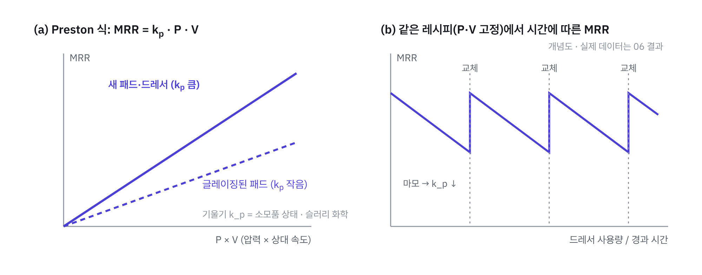
3.7 패드 글레이징과 컨디셔닝: kp가 시간에 따라 변하는 이유
연마를 계속하면 패드 돌기가 눌리고 닳아 매끄러워지고, 기공에는 연마 부산물과 슬러리 찌꺼기가 끼어 막힙니다. 이를 글레이징(glazing)이라 하며, 입자를 웨이퍼에 누르는 접촉점이 줄고 슬러리 수송이 나빠져 kp와 MRR이 떨어집니다. 이를 막기 위해 다이아몬드가 박힌 컨디셔너(드레서)가 연마 중 또는 연마 사이에 패드를 긁어 새 돌기를 만들고 기공을 엽니다.
그런데 컨디셔너 자체도 다이아몬드가 무뎌지며 닳습니다. 무뎌진 컨디셔너는 패드를 충분히 되살리지 못하므로, 컨디셔너 수명 안에서 MRR은 서서히 떨어지고 교체 직후 회복됩니다. 패드도 컨디셔닝으로 조금씩 깎여 결국 교체됩니다. 즉 소모품 사용량은 kp의 대리 지표이고, 현업에서 소모품 교체 주기(PM)를 정하는 근거가 됩니다. SK하이닉스는 패드 교체 주기가 짧다는 점을 패드 재활용 기술 개발의 배경으로 소개하기도 했습니다(뉴스룸, 2023).
3.8 CMP 공정 제어: 종료점 검출, 계측 샘플링, VM, Run-to-Run
- 종료점 검출(EPD). 막이 바뀌는 순간(예: W → 산화막)에 마찰이 변하므로 모터 전류·광학 반사율로 종료 시점을 잡을 수 있습니다. 정지층이 없는 산화막 연마는 이 신호가 없어 시간 기준으로 끝내는 경우가 많습니다.
- 계측 샘플링. 연마 후 두께는 측정 장비로 재지만 장비 용량과 사이클 타임 때문에 일부 웨이퍼만 측정합니다.
- 가상 계측(VM). 장비 센서로 모든 웨이퍼의 측정값을 예측합니다. Kang et al.(2011)은 반도체 생산 데이터로 VM 모델을 만들고 이를 EWMA Run-to-Run 제어에 넣는 구조를 제안했습니다.
- Run-to-Run(R2R) 제어. 이전 웨이퍼(또는 로트)의 결과로 다음 웨이퍼의 레시피를 조정합니다. CMP에서는 1990년대부터 MIT의 Boning 그룹이 패드 마모로 MRR이 떨어지는 문제를 EWMA로 모델 오프셋을 갱신해 보상하는 R2R 제어를 시연했습니다(Smith et al., 1996). 시간 기준 연마라면 조정 대상은 연마 시간입니다.
λ(0 < λ ≤ 1)는 필터 상수입니다. 작으면 측정 잡음에 강하지만 변화를 늦게 따라가고, 크면 빠르게 따라가지만 웨이퍼 간 랜덤 변동까지 따라 흔들립니다. 화학공학 공정제어의 1차 지수 필터와 같은 식입니다.
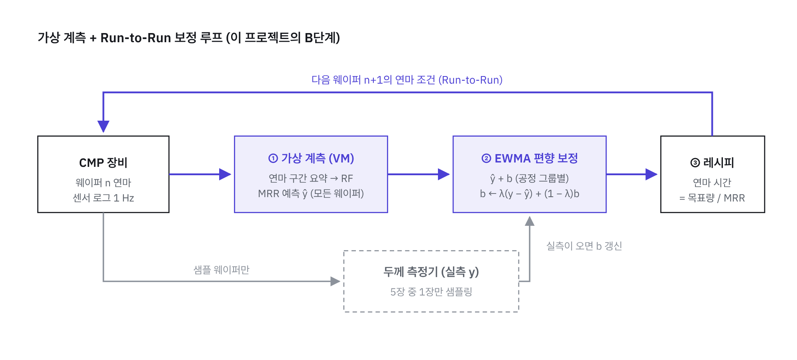
3.9 현업 근거 정리
| 출처 | 내용 | 본 프로젝트와의 연결 |
|---|---|---|
| 삼성전자 Foundry CMP Technology Team · 동아대 (2025) | 5존 캐리어 헤드 존 압력으로 정규화 MRR 프로파일을 DNN으로 예측 | 존 압력이 MRR 예측의 핵심 입력 → 중요도 상위가 존·링 압력 |
| SK하이닉스 · 성균관대 (2019) | 리테이너 링 단차 구조로 MRR과 WIWNU 개선 | 리테이너 링 압력이 센서 중요도 1위 |
| SK하이닉스 뉴스룸 (2023) | 패드(기계적)·슬러리(화학적)·컨디셔너의 역할, 짧은 패드 교체 주기 | 소모품 마모 = kp 감소, 드레서 교체 주기 톱니 |
| Smith, Boning et al. (1996) | 패드 마모에 따른 MRR 드리프트를 EWMA R2R로 보상 | B단계 EWMA 편향 보정과 같은 구조 |
| Kang et al. (2011) | VM 예측을 EWMA R2R 제어에 결합 | VM + EWMA, 실측 샘플링 비율 비교 |
04분석 설계
워크플로우
1초 단위 · 97만 행→웨이퍼 × 단계 요약
연마 구간만 · 2,825 표본→전처리 파이프라인
Imputer · Scaler · OneHot→모델 비교
기준선 · 선형 · 트리 · RF→평가 설계
같은 기간 vs 미래→튜닝 · test 1회
부트스트랩 CI→R2R 보정
EWMA 시뮬레이션
데이터
| 항목 | training | validation | test |
|---|---|---|---|
| 시계열 행 수 | 672,744 | 144,148 | 156,262 |
| 라벨 표본 (웨이퍼 × 단계) | 1,981 → 1,977 | 424 | 424 |
| 빈 CSV 파일 | 1 | 27 | 30 |
| 연마 로그 없는 표본 (전부 A_1) | 181 / 364 | 33 / 67 | 34 / 73 |
출처: PHM Society 2016 Data Challenge (CMP). 원래 배포 링크가 삭제되어 GitHub 사본(akangel0307/PHM-Data-Challenge)을 사용했고, 행 수가 Li·Wu·Yu (2019)의 보고값과 정확히 일치함을 확인했습니다. 시계열 25개 컬럼, 결측 0. 세 세트 모두 같은 약 65일 기간에 걸쳐 있습니다.
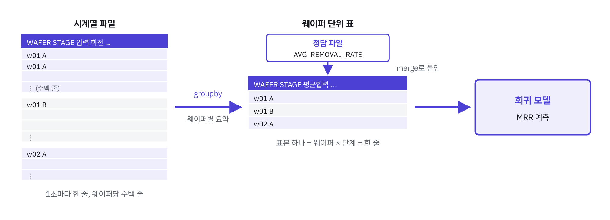
공정 그룹
각 표본에 기록된 CHAMBER의 최솟값과 STAGE로 공정 그룹을 정의했습니다. 세 그룹은 MRR 수준이 두 배 가까이 달라 사실상 다른 공정(다른 kp)입니다.
| 그룹 | 표본 (train) | MRR 평균 ± 표준편차 | 평균 연마 시간 | 평균 플래튼 회전 |
|---|---|---|---|---|
| A_1 | 364 | 151.2 ± 3.9 | 81 s | 175 |
| A_4 | 798 | 73.1 ± 6.7 | 114 s | 176 |
| B_4 | 815 | 80.0 ± 9.2 | 116 s | 176 |
연마 시간과 회전은 연마 로그가 있는 표본 기준. A_1은 연마 시간이 가장 짧고 회전 속도는 같은데도 MRR이 두 배이므로, 차이는 P·V가 아니라 공정 자체(kp)에서 옵니다.
설계 결정과 근거
| 결정 | 근거 (데이터 + CMP 이론) |
|---|---|
연마 구간 = STAGE_ROTATION > 0 | 압력은 로그 대부분에서 켜져 있지만 플래튼은 짧은 두 구간만 돎. Preston 식에서 V = 0이면 MRR = 0이므로 회전 구간만 요약 |
| 그룹을 원-핫 피처로 추가 | 그룹 간 MRR 차이가 그룹 안 변동보다 훨씬 큼. 그룹을 섞어 보면 심슨의 역설로 상관 방향이 왜곡됨(6.3) |
| 이상치 기준을 train 안에서만 결정 | test를 보고 기준을 정하면 데이터 누수. A_1에서 Q3 + 3·IQR(169.2)을 넘는 4개(최대 4,326)를 기록 오류로 판단해 제거 |
연마 로그 없는 표본: 0 채움 + NO_POLISH | test에도 같은 비율로 있어 삭제하면 실제 상황에서 예측 불가. 행 삭제·특성 삭제·중앙값 대체 모두 부적합 |
| 소모품 사용량 카운터를 최종 모델에서 제외 | 같은 기간 평가에서는 성능을 올리지만 미래 평가에서 그룹 평균보다 나쁨. 카운터가 “이 무렵”을 외우는 시간 이름표로 작동(6.6) |
| 튜닝 기준 = TimeSeriesSplit(5) | 현업 VM은 과거 데이터로 학습해 앞으로 들어올 웨이퍼를 예측함. 같은 기간 점수로 고르면 시간 대리 변수를 선호하게 됨 |
| test는 마지막에 1회만 사용 | 모델·피처 선택에 test를 쓰지 않아야 일반화 성능 추정이 편향되지 않음 |
| EWMA 편향은 그룹별로 따로 | 그룹마다 공정이 달라 드리프트 방향·크기가 다를 수 있음. 챔버별 R2R 상태를 따로 두는 현업 방식과 같음 |
교차 검증 방식
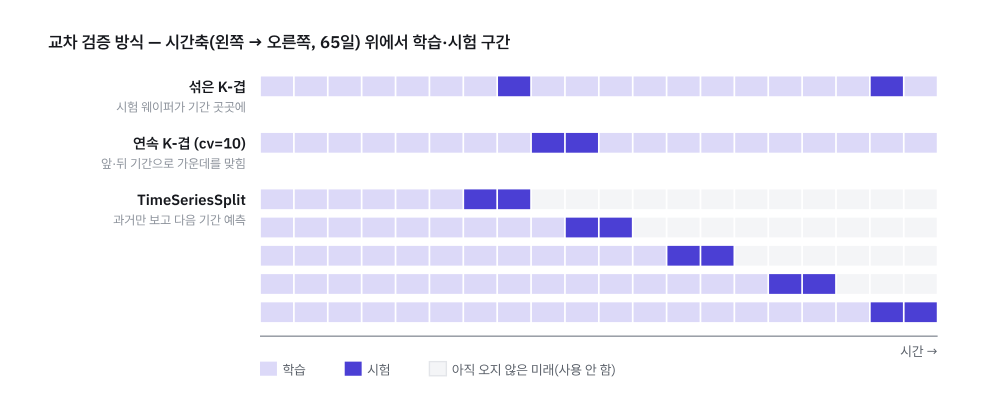
평가 지표 정의
| 지표 | 정의 | 쓰임 |
|---|---|---|
| RMSE | √ mean( (y − ŷ)2 ) | 주 지표. 큰 오차에 더 큰 벌점 |
| MAE | mean( |y − ŷ| ) | 보조 지표 |
| 그룹별 RMSE | A_1 / A_4 / B_4 각각의 RMSE | 어느 공정에서 좋아지고 나빠졌는지 확인 |
| 기준선 | train의 그룹별 평균 MRR로 예측 | “센서가 실제로 보탠 정보”를 재는 기준 |
| 95% 신뢰구간 | test 예측쌍을 재표본추출한 부트스트랩 RMSE 분포 | 개선이 우연인지 확인 |
05코드 구성과 전체 코드
수업 실습(Géron, Hands-On Machine Learning 2장 End-to-End 프로젝트 흐름)의 순서를 그대로 따라 Jupyter 노트북 한 개로 작성했습니다. 각 단계는 앞 단계의 결과물(train_table, make_preprocessing 등)을 이어 씁니다.
| 단계 | 내용 | 핵심 함수 · 객체 |
|---|---|---|
| 1. 데이터 합치기 | CSV 185개 결합, 빈 파일 제외 | read_folder |
| 2. 들여다보기 | 라벨 결합, 공정 그룹, 이상치 | load_set, IQR |
| 3. 웨이퍼 단위 요약 | 연마 구간 평균, 연마 시간, NO_POLISH, 사용량, Preston 피처 | make_table, add_features |
| 4. 전처리 파이프라인 | 수치 / 범주 전처리, 기준선, 선형 회귀 | make_preprocessing, report |
| 5. 모델 비교 · 평가 설계 | 트리 · 랜덤 포레스트, 피처 세트 × 평가 방식 4종 | KFold, TimeSeriesSplit |
| 6. 튜닝 · 최종 평가 | 그리드 서치, 특성 중요도, test 1회, 부트스트랩 | GridSearchCV, stats.bootstrap |
| 7. R2R 보정 | 45일 학습 → 20일 순차 예측, EWMA 편향 보정 | ewma_correct |
1_load.py
import numpy as np
import pandas as pd
import matplotlib.pyplot as plt
import glob
# 데이터: github.com/akangel0307/PHM-Data-Challenge (PHM 2016 Data Challenge 사본)
base = "PHM-Data-Challenge/data/2016 PHM Data Challenge/"
def read_folder(folder):
files = sorted(glob.glob(base + folder + "*.csv"))
# 빈 CSV(행 0개)가 섞이면 concat 결과의 dtype이 전부 object가 된다 → 행이 있는 파일만 합침
frames = [d for f in files if len(d := pd.read_csv(f)) > 0]
return pd.concat(frames, ignore_index=True)
train_ts = read_folder("2016 PHM DATA CHALLENGE CMP DATA SET/CMP-data/training/")
train_ts.info()2_explore.py
def load_set(folder, label_file):
ts = read_folder(folder)
y = pd.read_csv(base + label_file)
# 공정 그룹: 웨이퍼 × 단계마다 기록된 CHAMBER의 최솟값 (A_1 / A_4 / B_4)
chamber = ts.groupby(["WAFER_ID", "STAGE"])["CHAMBER"].min().reset_index()
return ts, y.merge(chamber, on=["WAFER_ID", "STAGE"])
D = "2016 PHM DATA CHALLENGE CMP DATA SET/"
V = "2016 PHM DATA CHALLENGE CMP VALIDATION DATA SET/"
train_ts, train_y = load_set(D + "CMP-data/training/", D + "CMP-training-removalrate.csv")
valid_ts, valid_y = load_set(V + "validation/", V + "CMP-validation-removalrate.csv")
test_ts, test_y = load_set(D + "CMP-data/test/", D + "CMP-test-removalrate.csv")
train_y.groupby(["STAGE", "CHAMBER"])["AVG_REMOVAL_RATE"].describe()
# 이상치 기준은 training 안에서만 정한다 (test를 보고 정하면 데이터 누수)
a1 = train_y[(train_y["STAGE"] == "A") & (train_y["CHAMBER"] == 1)]
q1, q3 = a1["AVG_REMOVAL_RATE"].quantile([0.25, 0.75])
upper = q3 + 3 * (q3 - q1) # 169.22
outliers = a1[a1["AVG_REMOVAL_RATE"] > upper] # 4개 (최대 4,326)
train_y_clean = train_y.drop(outliers.index)3_wafer_table.py
process = ["PRESSURIZED_CHAMBER_PRESSURE", "MAIN_OUTER_AIR_BAG_PRESSURE", "CENTER_AIR_BAG_PRESSURE",
"RETAINER_RING_PRESSURE", "RIPPLE_AIR_BAG_PRESSURE", "EDGE_AIR_BAG_PRESSURE",
"WAFER_ROTATION", "STAGE_ROTATION", "HEAD_ROTATION",
"SLURRY_FLOW_LINE_A", "SLURRY_FLOW_LINE_B", "SLURRY_FLOW_LINE_C"]
usage = ["USAGE_OF_BACKING_FILM", "USAGE_OF_DRESSER", "USAGE_OF_POLISHING_TABLE",
"USAGE_OF_DRESSER_TABLE", "USAGE_OF_MEMBRANE", "USAGE_OF_PRESSURIZED_SHEET"]
zones = ["MAIN_OUTER_AIR_BAG_PRESSURE", "CENTER_AIR_BAG_PRESSURE",
"RIPPLE_AIR_BAG_PRESSURE", "EDGE_AIR_BAG_PRESSURE"]
def make_table(ts, y):
y = y.copy()
y["GROUP"] = y["STAGE"] + "_" + y["CHAMBER"].astype(int).astype(str)
# Preston: V = 0이면 MRR = 0 → 플래튼이 도는 구간만 실제 연마로 본다
polishing = ts[ts["STAGE_ROTATION"] > 0]
active = polishing.groupby(["WAFER_ID", "STAGE"])[process].mean().reset_index()
polish_time = polishing.groupby(["WAFER_ID", "STAGE"]).size().reset_index(name="POLISH_TIME")
active = active.merge(polish_time, on=["WAFER_ID", "STAGE"])
table = y.merge(active, on=["WAFER_ID", "STAGE"], how="left")
# A_1 절반은 연마 구간 로그가 없다 (test에도 있음) → 0으로 채우고 표시 컬럼
table["NO_POLISH"] = table["POLISH_TIME"].isna().astype(int)
table[process + ["POLISH_TIME"]] = table[process + ["POLISH_TIME"]].fillna(0)
return table
def add_features(table, ts):
wear = ts.groupby(["WAFER_ID", "STAGE"])[usage].mean().reset_index()
start = ts.groupby(["WAFER_ID", "STAGE"])["TIMESTAMP"].min().reset_index(name="START_TIME")
table = table.merge(wear, on=["WAFER_ID", "STAGE"]).merge(start, on=["WAFER_ID", "STAGE"])
table["P"] = table[zones].sum(axis=1) # Preston 피처 (검증용)
table["V"] = table["STAGE_ROTATION"]
table["PV"] = table["P"] * table["V"]
return table
train_table = add_features(make_table(train_ts, train_y_clean), train_ts)
valid_table = add_features(make_table(valid_ts, valid_y), valid_ts)
test_table = add_features(make_table(test_ts, test_y), test_ts)
# 그룹 안에서 다시 본 상관계수 (전체로 보면 심슨의 역설)
for g, d in train_table.groupby("GROUP"):
print(g, d[["P", "RETAINER_RING_PRESSURE", "USAGE_OF_DRESSER",
"USAGE_OF_DRESSER_TABLE", "AVG_REMOVAL_RATE"]].corr()["AVG_REMOVAL_RATE"].round(2).to_dict())4_preprocessing.py
from sklearn.pipeline import make_pipeline, Pipeline
from sklearn.compose import ColumnTransformer
from sklearn.preprocessing import StandardScaler, OneHotEncoder
from sklearn.impute import SimpleImputer
from sklearn.linear_model import LinearRegression
from sklearn.metrics import root_mean_squared_error, mean_absolute_error
num_base = process + ["POLISH_TIME", "NO_POLISH",
"USAGE_OF_BACKING_FILM", "USAGE_OF_DRESSER", "USAGE_OF_POLISHING_TABLE",
"USAGE_OF_MEMBRANE", "USAGE_OF_PRESSURIZED_SHEET"]
num_physics = ["P", "PV"]
cat_attribs = ["GROUP"]
X_train, y_train = train_table.drop("AVG_REMOVAL_RATE", axis=1), train_table["AVG_REMOVAL_RATE"].copy()
X_valid, y_valid = valid_table.drop("AVG_REMOVAL_RATE", axis=1), valid_table["AVG_REMOVAL_RATE"].copy()
def make_preprocessing(num_attribs):
num_pipeline = make_pipeline(SimpleImputer(strategy="median"), StandardScaler())
cat_pipeline = make_pipeline(SimpleImputer(strategy="most_frequent"),
OneHotEncoder(handle_unknown="ignore"))
return ColumnTransformer([("num", num_pipeline, num_attribs),
("cat", cat_pipeline, cat_attribs)])
def report(name, y_true, y_pred, groups):
print(f"[{name}] RMSE {root_mean_squared_error(y_true, y_pred):.3f} | MAE {mean_absolute_error(y_true, y_pred):.3f}")
for g in ["A_1", "A_4", "B_4"]:
m = (groups == g)
print(f" {g}: RMSE {root_mean_squared_error(y_true[m], y_pred[m]):.3f}")
grp_mean = train_table.groupby("GROUP")["AVG_REMOVAL_RATE"].mean() # 기준선
report("기준선: 그룹 평균", y_valid, X_valid["GROUP"].map(grp_mean), X_valid["GROUP"])
lin_reg = make_pipeline(make_preprocessing(num_base + num_physics), LinearRegression())
lin_reg.fit(X_train, y_train)
report("선형 회귀 - valid", y_valid, lin_reg.predict(X_valid), X_valid["GROUP"])5_model_eval.py
from sklearn.tree import DecisionTreeRegressor
from sklearn.ensemble import RandomForestRegressor
from sklearn.model_selection import cross_val_score, KFold, TimeSeriesSplit
def forest(num_attribs):
return make_pipeline(make_preprocessing(num_attribs),
RandomForestRegressor(random_state=42, n_jobs=-1))
# 같은 모델, 네 가지 시험
cv_shuffle = KFold(n_splits=10, shuffle=True, random_state=42)
order = np.argsort(X_train["START_TIME"].values) # 시간순 정렬
X_sorted, y_sorted = X_train.iloc[order], y_train.iloc[order]
tscv = TimeSeriesSplit(n_splits=5) # 과거로 학습 → 다음 기간 예측
no_usage = process + ["POLISH_TIME", "NO_POLISH"]
feature_sets = {
"base": num_base,
"base-DRESSER": [c for c in num_base if c != "USAGE_OF_DRESSER"],
"base+Preston": num_base + num_physics,
"base+clock": num_base + ["USAGE_OF_DRESSER_TABLE"],
"no_usage": no_usage,
}
for name, cols in feature_sets.items():
block = -cross_val_score(forest(cols), X_train, y_train, scoring="neg_root_mean_squared_error", cv=10).mean()
shuf = -cross_val_score(forest(cols), X_train, y_train, scoring="neg_root_mean_squared_error", cv=cv_shuffle).mean()
future = -cross_val_score(forest(cols), X_sorted, y_sorted, scoring="neg_root_mean_squared_error", cv=tscv).mean()
valid = root_mean_squared_error(y_valid, forest(cols).fit(X_train, y_train).predict(X_valid))
print(f"{name:14s} 연속CV {block:.3f} | 섞은CV {shuf:.3f} | 미래CV {future:.3f} | valid {valid:.3f}")6_final.py
from sklearn.model_selection import GridSearchCV
from scipy import stats
final_features = no_usage
full_pipeline = Pipeline([
("preprocessing", make_preprocessing(final_features)),
("random_forest", RandomForestRegressor(random_state=42, n_jobs=-1)),
])
param_grid = {"random_forest__max_features": [4, 8, 12, 17],
"random_forest__min_samples_leaf": [1, 5, 10]}
grid_search = GridSearchCV(full_pipeline, param_grid, cv=tscv,
scoring="neg_root_mean_squared_error")
grid_search.fit(X_sorted, y_sorted)
print(grid_search.best_params_, -grid_search.best_score_)
final_model = grid_search.best_estimator_
names = final_model["preprocessing"].get_feature_names_out()
importances = pd.Series(final_model["random_forest"].feature_importances_, index=names)
print("GROUP 합:", importances[importances.index.str.startswith("cat__")].sum())
sensor = importances[importances.index.str.startswith("num__")]
print((sensor / sensor.sum()).sort_values(ascending=False).round(3))
# 봉인해 둔 test로 단 한 번 평가
X_test, y_test = test_table.drop("AVG_REMOVAL_RATE", axis=1), test_table["AVG_REMOVAL_RATE"].copy()
final_predictions = final_model.predict(X_test)
report("최종 모델 - test", y_test, final_predictions, X_test["GROUP"])
report("기준선 - test", y_test, X_test["GROUP"].map(grp_mean), X_test["GROUP"])
def rmse(y_true, y_pred):
return np.sqrt(np.mean((y_true - y_pred) ** 2))
boot = stats.bootstrap((y_test.values, final_predictions), rmse, paired=True,
vectorized=False, confidence_level=0.95, random_state=42)
print(boot.confidence_interval)7_r2r_ewma.py
# 45일까지로 학습 → 남은 20일을 한 장씩 순서대로 예측 (test는 다시 쓰지 않음)
train_sorted = train_table.sort_values("START_TIME").reset_index(drop=True)
train_sorted["DAY"] = (train_sorted["START_TIME"] - train_sorted["START_TIME"].min()) / 86400
past, future = train_sorted[train_sorted["DAY"] < 45], train_sorted[train_sorted["DAY"] >= 45]
r2r_model = Pipeline([("preprocessing", make_preprocessing(final_features)),
("random_forest", RandomForestRegressor(random_state=42, n_jobs=-1))])
r2r_model.fit(past.drop("AVG_REMOVAL_RATE", axis=1), past["AVG_REMOVAL_RATE"])
pred = r2r_model.predict(future.drop("AVG_REMOVAL_RATE", axis=1))
actual, groups = future["AVG_REMOVAL_RATE"].values, future["GROUP"].values
def ewma_correct(pred, actual, groups, lam, every):
bias = {}
corrected = np.zeros(len(pred))
for i in range(len(pred)):
g = groups[i]
corrected[i] = pred[i] + bias.get(g, 0.0) # 먼저 보정 예측을 내고
if i % every == 0: # 실측이 있는 웨이퍼만 편향 갱신
bias[g] = lam * (actual[i] - pred[i]) + (1 - lam) * bias.get(g, 0.0)
return corrected
print("보정 없음:", root_mean_squared_error(actual, pred))
rows = []
for lam in [0.1, 0.3, 0.5]:
for every in [1, 5, 10]:
rows.append({"lambda": lam, "every": every,
"rmse": root_mean_squared_error(actual, ewma_correct(pred, actual, groups, lam, every))})
pd.DataFrame(rows).pivot(index="lambda", columns="every", values="rmse").round(3)06결과와 분석
6.1 MRR 분포와 이상치
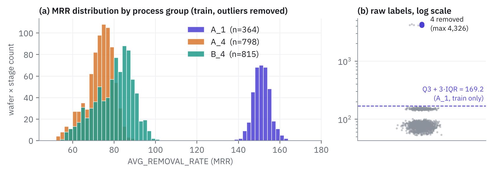
- MRR 분포는 봉우리가 두 개입니다. 평균 98.6이 어느 웨이퍼의 대표값도 아니라는 점에서, 그룹을 나누지 않은 요약 통계는 의미가 없었습니다.
- 최댓값 4,326은 정상 범위(151 ± 4)의 약 29배로 물리적으로 불가능한 값입니다. validation · test에는 이런 값이 없어 기록 오류로 판단했지만, 제거 기준 자체는 test를 보지 않고 training 안에서만 정했습니다.
6.2 실제 연마 구간: 압력은 켜져 있어도 연마는 아니다
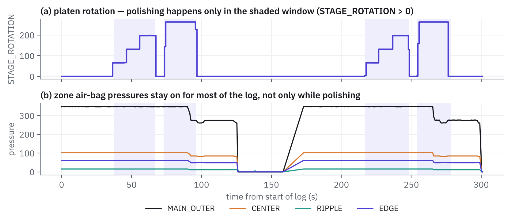
- 로그 전체를 평균하면 연마가 일어나지 않는 대기·로딩 구간의 압력까지 섞입니다. Preston 식에 따라 회전 구간(
STAGE_ROTATION > 0)만 요약했습니다. 이는 현업 FDC(이상 감지)에서 레시피 스텝별로 센서를 요약하는 방식과 같습니다. - 이렇게 요약하자 A_1의 절반(181 / 364)에서 연마 구간이 사라졌습니다. 해당 웨이퍼의 MRR은 정상이므로 실제로는 연마되었고, 센서 로그에 회전 구간이 기록되지 않은 것입니다(로그 길이는 정상, 압력이 켜진 비율이 3% 대 44%). validation · test에도 같은 비율로 존재해 삭제 대신
NO_POLISH표시로 처리했습니다.
6.3 심슨의 역설: 그룹을 섞으면 상관이 거짓말을 한다
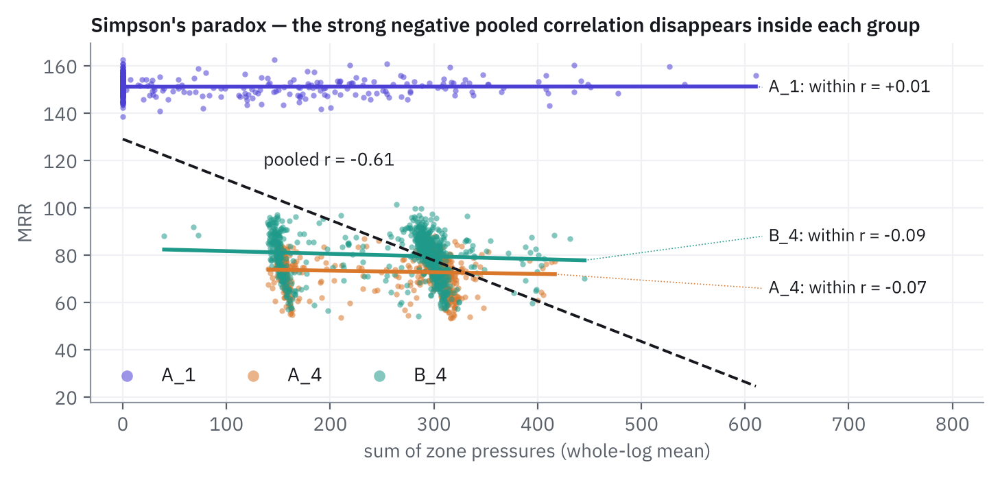
| 변수 (연마 구간 평균) | 전체 r | A_1 안 | A_4 안 | B_4 안 |
|---|---|---|---|---|
| 존 압력 합 P | −0.55 | +0.04 | −0.20 | −0.22 |
| 플래튼 회전 (V) | −0.64 | −0.06 | −0.02 | −0.04 |
| 리테이너 링 압력 | −0.48 | +0.06 | +0.30 | +0.35 |
| 드레서 사용량 | −0.03 | −0.21 | −0.44 | −0.33 |
| 드레서 테이블 사용량 | +0.11 | +0.45 | +0.51 | +0.62 |
- 현업에서도 여러 챔버·레시피의 데이터를 한데 모아 상관을 보면 같은 착시가 생깁니다. 챔버·레시피별로 층을 나눠 분석해야 한다는 근거입니다.
- 그룹 안에서 드레서 사용량은 일관되게 음의 상관입니다. 드레서가 닳을수록 MRR이 떨어진다는 3.7의 이론과 방향이 같습니다.
- V의 상관이 그룹 안에서 0인 이유는 회전 속도가 레시피로 고정되어 있기 때문입니다(표준편차 4.8, 약 ±3%). 변하지 않는 변수는 아무것도 설명할 수 없습니다.
- 상관 1위인 드레서 테이블 사용량은 물리적으로 해석이 어려워 시간축에 그려 보았습니다(6.4).
6.4 소모품 마모가 만든 kp의 톱니
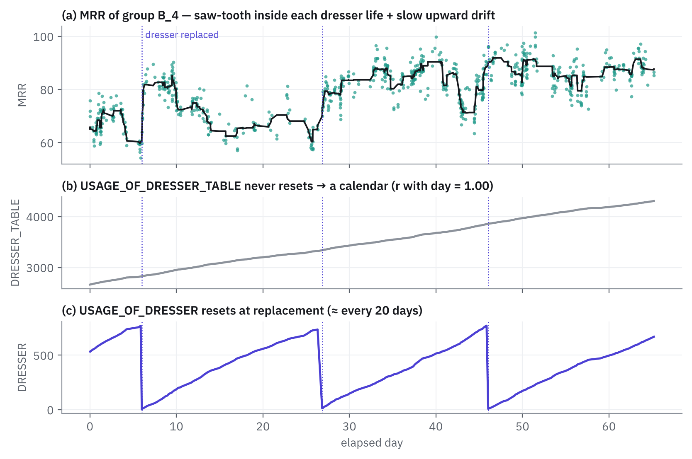
- 드레서 테이블 사용량은 리셋 없이 일정하게 증가해 경과일과의 상관이 1.00입니다. 즉 소모품 상태가 아니라 달력이며, MRR과의 높은 상관(+0.6)은 65일 동안 MRR이 60~75에서 80~95로 서서히 오른 장기 추세를 반영한 것입니다.
- 드레서 사용량은 약 20일마다 0으로 리셋되는 톱니입니다. 교체 직전 MRR이 가장 낮고(55~66) 교체 직후 회복(75~95)되며, 한 주기 안에서는 점점 떨어집니다. 3.7에서 설명한 “컨디셔너 마모 → 패드 글레이징 → kp 감소 → 교체로 회복”이 생산 데이터에 그대로 나타난 것입니다.
- 장기 상승 추세의 원인은 데이터만으로는 확정할 수 없습니다. 슬러리 로트, 패드 교체, 또는 MRR이 오르자 압력을 낮춘 피드백 제어(압력과 경과일의 상관 −0.26)를 가설로 두었습니다.
6.5 같은 기간 성능: 모델 비교
| 모델 (validation) | train RMSE | valid RMSE | 해석 |
|---|---|---|---|
| 그룹 평균 기준선 | – | 7.72 | A_1 4.07 · A_4 6.82 · B_4 9.50 |
| 선형 회귀 | 5.72 | 5.76 | train ≈ valid → 과소적합. 기울기를 그룹이 공유해 A_1은 5.25로 오히려 악화 |
| 결정 트리 | 0.37 | 5.75 | 학습 데이터를 거의 외움 → 과대적합 |
| 랜덤 포레스트 (사용량 포함) | – | 3.87 | 기준선 대비 약 50% 감소. 그러나 아래 6.6의 평가 설계 문제가 있음 |
6.6 평가 설계: 같은 모델, 네 개의 점수
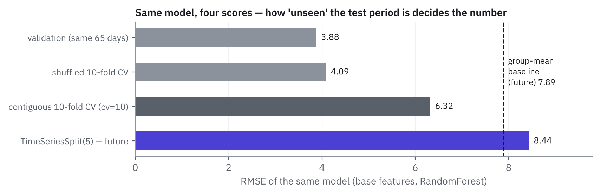
training 표는 시간순으로 정렬되어 있어(START_TIME과 행 순서의 상관 0.995) 기본 cv=10은 연속된 약 6.5일씩을 떼어 시험합니다. validation은 같은 65일 안에 섞여 있어 사실상 “섞은 K-겹”과 같은 쉬운 시험입니다. 현업 VM은 과거로 학습해 내일 웨이퍼를 예측하므로, 의미 있는 점수는 TimeSeriesSplit입니다.
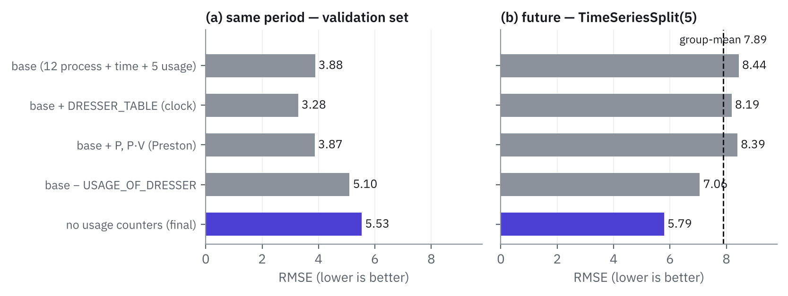
| 피처 세트 | 연속 CV | 섞은 CV | valid | 미래 CV |
|---|---|---|---|---|
| base (공정 12 + 연마 시간 + NO_POLISH + 사용량 5) | 6.32 | 4.09 | 3.88 | 8.44 |
| base − 드레서 사용량 | 6.16 | 4.98 | 5.10 | 7.06 |
| base + Preston (P, P·V) | 6.30 | 4.11 | 3.87 | 8.39 |
| base + 드레서 테이블(시계) | 5.28 | 3.34 | 3.28 | 8.19 |
| 사용량 카운터 전부 제외 (최종) | 5.79 | 5.44 | 5.53 | 5.79 |
| 그룹 평균 기준선 | – | – | 7.72 | 7.89 |
- Preston 피처는 효과가 없었습니다(3.88 → 3.87). V가 고정이라 P·V는 P의 상수배이고, 트리 모델은 이미 존 압력을 개별로 보고 있습니다.
- 드레서 사용량을 빼면 같은 기간 오차가 31% 커졌습니다(3.88 → 5.10). 같은 기간에서는 소모품 상태(kp)가 예측의 핵심이었습니다.
- 시계 피처는 가설로 넣었다가 기각했습니다. 같은 기간에서는 가장 좋았지만(3.28) 미래에서는 8.19로 기준선보다 나쁩니다. 랜덤 포레스트는 학습 범위 밖의 값을 받으면 학습 구간 끝의 값을 그대로 내놓기 때문에, 계속 증가하는 시계 변수로는 외삽할 수 없습니다.
- 리셋되는 드레서 사용량도 미래에서는 해가 되었습니다. 같은 사용량 값이 두 번째·네 번째 드레서 주기에 모두 나오지만 그 사이 MRR 수준이 10 넘게 올라, 모델은 사용량 값을 “그 무렵의 MRR” 이름표로 외웁니다. 미래에는 지난 주기의 수준을 꺼내 틀리게 됩니다.
- 사용량 카운터를 모두 뺀 모델은 같은 기간 성능을 일부 내주는 대신 미래에서 기준선 대비 약 27% 개선(7.89 → 5.79)되어 최종 피처로 선택했습니다. 빠진 시간 정보는 B단계 EWMA 보정으로 보완합니다(6.9).
6.7 튜닝과 특성 중요도
| max_features ＼ min_samples_leaf | 1 | 5 | 10 |
|---|---|---|---|
| 4 | 6.80 | 8.67 | 9.72 |
| 8 | 6.10 | 6.67 | 7.49 |
| 12 | 5.86 | 5.97 | 6.21 |
| 17 (전체) | 5.79 | 5.82 | 5.86 |
GridSearchCV, cv = TimeSeriesSplit(5), 미래 RMSE. 최적 조합이 기본값과 같았습니다. max_features가 작으면 분할 후보에 GROUP_A_1이 들어갈 확률(4/17 ≈ 24%)이 낮아 그룹을 못 나누는 트리가 많아져 크게 나빠집니다.
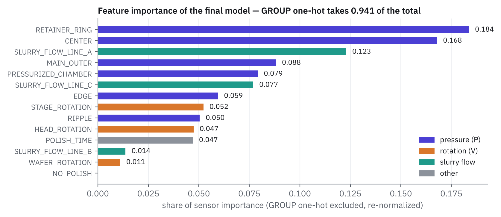
- 중요도의 94%는 공정 그룹 구분입니다. 모델이 줄인 오차 대부분이 “어느 공정인가”에서 나온다는 뜻이고, 그룹 간 차이(약 2배)가 그룹 안 변동(표준편차 4~9)보다 훨씬 크기 때문입니다. 센서는 그룹 안의 흔들림을 맞혀 기준선 대비 실제 개선을 만듭니다.
- 센서 중 1·2위는 리테이너 링 압력과 센터 존 압력, 회전 계열은 하위입니다. “V는 레시피 고정, P 계열이 변동을 설명한다”는 6.3의 분석과 일치하고, 3.4의 현업 연구가 리테이너 링·존 압력을 핵심 변수로 다루는 것과도 같은 방향입니다.
- 불순도 기반 중요도는 방향(+/−)을 알려주지 않고 상관된 변수끼리 중요도를 나눠 가지므로, 인과 해석이 아니라 “모델이 무엇을 보고 있는가”의 확인으로만 사용했습니다.
6.8 최종 평가: 봉인한 test 세트
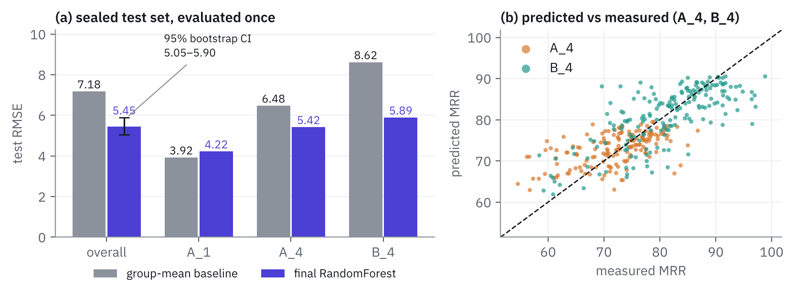
| test (424 표본) | 전체 RMSE | MAE | A_1 | A_4 | B_4 |
|---|---|---|---|---|---|
| 그룹 평균 기준선 | 7.18 | 5.55 | 3.92 | 6.48 | 8.62 |
| 최종 랜덤 포레스트 | 5.45 | 4.20 | 4.22 | 5.42 | 5.89 |
| 변화 | −24% | −24% | +8% | −16% | −32% |
- 부트스트랩 95% 신뢰구간은 5.05 ~ 5.90으로, 구간의 최댓값도 기준선(7.18)보다 낮습니다. 개선이 우연이 아니라는 근거입니다.
- R2는 0.966이지만, 그룹 간 분산이 커서 높게 나오는 값이므로 주 지표로 쓰지 않았습니다.
- A_1은 기준선보다 약간 나빠졌습니다(3.92 → 4.22). A_1의 MRR은 151 ± 4로 거의 일정하고 그룹 안에서 어떤 센서와도 상관이 없으며, 절반은 연마 로그도 없습니다. 이런 그룹에서 센서는 정보가 아니라 잡음입니다. test 결과를 보고 모델을 고치면 봉인 위반이므로 한계로 보고합니다.
- 같은 test 세트에서 Li·Wu·Yu (2019)의 RMSE 7.009보다 낮은 값을 얻었지만, 전처리·피처·모델 구성이 달라 우열을 단정하지 않습니다.
6.9 Run-to-Run EWMA 보정
test는 다시 쓰지 않고, 시간순 training 안에서 45일까지(1,349 표본)로 학습한 뒤 남은 20일(628 표본)을 한 장씩 순서대로 예측했습니다. 각 웨이퍼마다 먼저 “예측 + 편향”을 내고, 실측이 있는 웨이퍼에서만 그 뒤에 편향을 갱신합니다(순서를 바꾸면 정답을 미리 보는 셈).
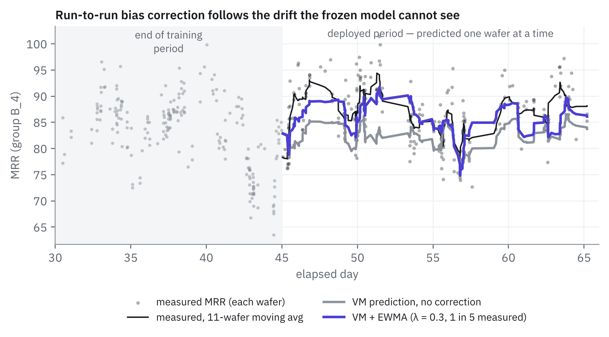
| 미래 20일 RMSE | 매 장 실측 | 5장 중 1장 | 10장 중 1장 |
|---|---|---|---|
| 보정 없음 | 6.153 | ||
| λ = 0.1 | 5.134 | 5.478 | 5.704 |
| λ = 0.3 | 5.012 | 5.316 | 5.615 |
| λ = 0.5 | 5.118 | 5.404 | 5.760 |
- 5장 중 1장만 측정해도 오차가 14% 줄었습니다(6.15 → 5.32). 매 장 측정하면 VM이 필요 없으므로, 측정을 80% 줄이고도 남는 이 개선이 가상 계측 + R2R의 존재 이유입니다. 실측 빈도와 정확도의 트레이드오프는 측정 장비 용량·사이클 타임과 함께 정해야 합니다.
- λ = 0.3이 가장 좋았습니다. λ = 0.1은 드리프트를 늦게 따라가고, λ = 0.5는 최근 한 장의 랜덤 변동(그룹 안 표준편차 4~9)까지 따라가 흔들립니다. 공정제어 지수 필터의 필터 상수 선택과 같은 문제입니다.
- 보정이 필요했던 이유는 6.6에서 시간 정보(사용량 카운터)를 모델에서 뺐기 때문입니다. “느린 드리프트는 모델이 외우지 말고, 실측 피드백으로 따라간다”는 역할 분담이 이 프로젝트의 최종 구조입니다.
07결론과 현업 활용
센서 로그만으로 CMP MRR을 기준선 대비 24% 낮은 오차로 예측했고(test RMSE 5.45, 95% CI 5.05 ~ 5.90), 미래 기간에는 실측 5장 중 1장으로 EWMA 편향을 보정해 오차를 14% 더 줄였습니다. 성능 숫자보다 중요한 결론은 다음 세 가지입니다.
- Preston 식의 P·V가 아니라 kp가 MRR 변동을 지배했습니다. 생산 라인에서 레시피(P·V)는 고정되어 있고, 변하는 것은 소모품 상태입니다. 드레서 교체 주기마다 MRR이 톱니처럼 움직이는 모습이 그 증거입니다.
- 평가 방식이 결론을 바꿉니다. 같은 모델이 같은 기간에서는 3.88, 미래에서는 8.44였습니다. 시간 대리 변수는 같은 기간 점수를 올리지만 배포하면 무너지므로, 모델 선택은 미래 예측 기준으로 해야 합니다.
- 머신러닝과 공정제어는 역할을 나눠야 합니다. 모델은 웨이퍼별 센서 차이를, EWMA는 느린 드리프트를 맡을 때 가장 안정적이었습니다.
현업에서 이 분석이 쓰이는 방식
| 프로젝트에서 한 것 | 현업의 대응 업무 | 이 데이터로 확인한 점 |
|---|---|---|
| 센서 → MRR 예측 모델 | 가상 계측(VM): 측정하지 않은 웨이퍼의 두께 추정, 계측 샘플링 축소 | 기준선 대비 24% 낮은 오차, B_4에서 32% 감소 |
| EWMA 편향 보정 | Run-to-Run 제어: 다음 웨이퍼의 연마 시간 = 목표 제거량 / 보정 MRR | 실측 5장 중 1장으로 미래 오차 14% 감소, λ = 0.3 |
| 연마 구간만 요약 | FDC 스텝별 요약: 레시피 스텝 단위로 센서 통계를 만들어 이상 감지 | 로그 전체 평균은 대기 구간 압력이 섞여 왜곡됨 |
| 드레서 주기와 MRR 톱니 | 소모품 수명 · PM 주기 관리: 컨디셔너·패드 교체 시점 결정, 교체 전후 MRR 보정 | 약 20일 주기, 교체 직전 MRR 최저(55~66) → 직후 75~95 회복 |
| 공정 그룹 분리 · 심슨의 역설 | 챔버별 모델 · 챔버 매칭: 챔버·레시피를 섞어 분석하지 않음 | 전체 r = −0.61이 그룹 안에서는 ≈ 0 |
| 시계 피처 기각 · TimeSeriesSplit | VM 모델 검증 · 재학습 정책: 시간 순서를 지킨 검증, 드리프트 감시 | 같은 기간 3.28 → 미래 8.19로 무너지는 피처 발견 |
| A_1 그룹 결과 | 그룹별 모델 적용 여부 판단: 센서가 정보가 없는 공정에는 단순 기준선 사용 | A_1은 기준선이 더 좋음(3.92 vs 4.22) |
정지층 없는 산화막 연마로 환산하면. 시간 기준 연마에서 남는 두께 오차는 MRR 예측의 상대 오차에 비례합니다. B_4 그룹(평균 MRR 약 80)에서 그룹 평균으로 연마 시간을 정하면 상대 오차가 약 11%(8.62 / 80)이고, 최종 모델로는 약 7%(5.89 / 80)입니다. 같은 목표 제거량이라면 두께 산포가 그만큼 줄어든다는 뜻입니다. (MRR 단위와 목표 제거량이 비공개라 비율로만 환산한 예시입니다.)
08한계와 향후 과제
| 한계 | 영향 | 개선 방향 |
|---|---|---|
| MRR 단위·연마 대상 막·장비 명세 비공개. 컬럼과 부품의 대응은 이름에 기반한 해석 | 물리적 해석(존 위치, 막 종류)을 확정할 수 없음 | 막 종류·장비 명세가 있는 데이터로 재검증 |
| train · validation · test가 같은 65일 기간에 섞여 있음 | test 5.45는 “같은 기간” 성능에 가까움. 미래 성능은 TimeSeriesSplit 5.79로 따로 보고 | 기간이 분리된 추가 데이터로 전진 검증 |
| A_1은 MRR이 센서와 무관하고 절반은 연마 로그 없음 | A_1에서 기준선보다 약간 나쁨 | validation 기준으로 그룹별 모델 / 기준선 선택 규칙 수립 |
| 평균 MRR만 예측, 반경 방향 프로파일·WIWNU 없음 | 존 압력 제어로 이어지는 균일도 분석은 불가 | 지점별 두께 데이터가 있으면 프로파일 예측(삼성 연구 방식) |
| R2R은 오프라인 시뮬레이션, 편향만 보정 | 측정 지연(로트 단위 피드백), 레시피 조정 한계가 반영되지 않음 | 측정 지연 반영, 연마 시간 조정 시뮬레이션, 이중 EWMA로 추세 항 추가 |
| λ와 실측 빈도를 같은 20일에서 비교 | 최적 λ 선택에 약간의 낙관 편향 | λ 선택용 기간과 평가용 기간을 분리 |
| 불순도 기반 특성 중요도 | 상관된 압력 변수끼리 중요도가 나뉘고 방향을 알 수 없음 | 순열 중요도, 부분 의존도 그림 추가 |
| 장기 MRR 상승의 원인 미확정 | 드리프트가 무엇 때문인지 설명 불가 | 슬러리 로트·패드 교체 이력이 있으면 원인 분해 |
09트러블슈팅 기록
| 증상 | 원인 | 해결 |
|---|---|---|
FileNotFoundError (데이터 폴더 없음) | 원래 배포 링크(Dropbox)가 삭제되었고, git clone을 Jupyter 서버가 실행 중인 터미널에 입력해 실행되지 않음 | GitHub 사본을 노트북 셀에서 !git clone으로 받음. 다른 사본은 validation 시계열이 불완전(424 중 245)해 행 수를 논문과 대조해 저장소를 선택 |
합친 데이터의 25개 컬럼이 전부 object | 처음 가설 “데이터가 많아서”는 앞쪽 10개 파일만 합쳐 보는 실험으로 기각. 실제 원인은 행이 0개인 빈 CSV(CMP-training-066.csv 등 58개) | len(d) > 0인 파일만 concat |
| MRR 최댓값 4,326 (정상의 약 29배) | 기록 오류로 판단. 다만 test를 보고 기준을 정하면 데이터 누수 | training 안의 Q3 + 3·IQR로 4개 제거, validation은 확인용으로만 사용 |
| 연마 구간 요약 후 A_1에서 181개 표본 소실 | MRR은 정상인데 센서 로그에 회전 구간이 없음. test에도 같은 비율로 존재 | 0 채움 + NO_POLISH 표시 컬럼, how="left" 병합 |
| 상관 1위 변수(드레서 테이블)가 물리적으로 해석 불가 | 경과일과 상관 1.00인 시계 변수 | 시간축에 그려 확인, 미래 평가로 피처에서 제외 |
| 10-겹 CV(6.30)와 validation(3.86)이 크게 다름 | training이 시간순이라 cv=10은 연속 기간을 떼어 시험, validation은 같은 기간에 섞임 | 섞은 K-겹 / 연속 K-겹 / TimeSeriesSplit으로 평가 방식을 명시적으로 분리 |
NameError: name 'np' is not defined (부트스트랩) | 노트북에서 numpy를 import하지 않은 채 np.sqrt 사용 | 첫 셀에 import를 모으고 신뢰구간 부분만 재실행(모델을 바꾸지 않으므로 test 봉인 위반 아님) |
10재현 방법
- Python 3,
numpy,pandas,matplotlib,scikit-learn(1.9 확인),scipy를 준비합니다. - 노트북과 같은 폴더에서 데이터를 받습니다:
!git clone https://github.com/akangel0307/PHM-Data-Challenge(약 212 MB) - 05의 코드를 1 → 7 순서로 실행합니다. 5단계는 피처 세트 5개 × 교차 검증 3종이라 수 분이 걸립니다.
- 6단계의 test 평가는 모델·피처를 모두 정한 뒤 한 번만 실행합니다.
- 랜덤 포레스트는
random_state=42로 고정했지만, 라이브러리 버전에 따라 특성 중요도 등이 소수 셋째 자리에서 달라질 수 있습니다.
참고문헌
- F. W. Preston, “The theory and design of plate glass polishing machines,” J. Soc. Glass Technol. 11, 214–256 (1927).
- L. M. Cook, “Chemical processes in glass polishing,” J. Non-Cryst. Solids 120, 152–171 (1990).
- J. Luo and D. A. Dornfeld, “Material removal mechanism in chemical mechanical polishing: theory and modeling,” IEEE Trans. Semicond. Manuf. 14(2), 112–133 (2001).
- T. Smith, D. Boning, J. Moyne, A. Hurwitz, J. Curry, “Compensating for CMP pad wear using run by run feedback control,” VLSI Multilevel Interconnect Conference (VMIC), Santa Clara (1996).
- P. Kang, D. Kim, H. J. Lee, S. Doh, S. Cho, “Virtual metrology for run-to-run control in semiconductor manufacturing,” Expert Syst. Appl. 38(3), 2508–2522 (2011).
- Y. Cho et al. (동아대 · 삼성전자 Foundry CMP Technology Team), “Prediction of normalized material removal rate profile based on deep neural network in five-zone carrier head CMP system,” Int. J. Precis. Eng. Manuf.-Green Technol. 12, 869–883 (2025).
- 성균관대 · SK하이닉스, “Investigation of step structure in CMP retainer ring to improve within-wafer non-uniformity,” J. Mech. Sci. Technol. 33, 3391–3395 (2019).
- SK하이닉스 뉴스룸, “CMP 패드 재활용 기술 개발 주역을 만나다” (2023.11.22).
- Z. Li, D. Wu, T. Yu, “Prediction of material removal rate for chemical mechanical planarization using decision tree-based ensemble learning,” J. Manuf. Sci. Eng. 141(3), 031003 (2019).
- PHM Society, “PHM Data Challenge 2016 (CMP).” 데이터 사본: github.com/akangel0307/PHM-Data-Challenge
- A. Géron, Hands-On Machine Learning with Scikit-Learn, Keras, and TensorFlow, 3rd ed., O’Reilly (2022).